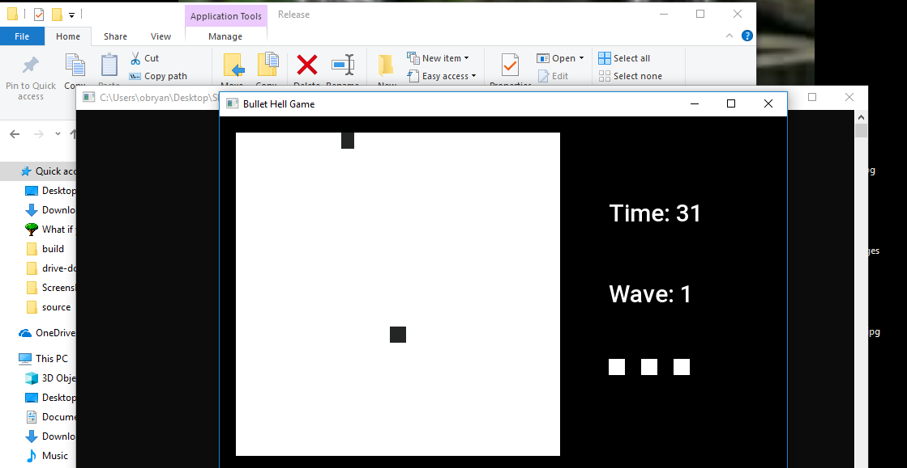

Getting Started¶
To start, run the command git clone https://github.com/NipIsTrue/SFML-Bullet-Hell-Game
Then, using your file explorer, navigate to the directory Installation Directory/bin/Release/ and run the executable named ‘Bullet Hell Wave Game’

The game should launch normally and you should see something like this:
If the game fails to launch, check out Common Problems
For instructions on how to play the game, check out Gameplay Explanation